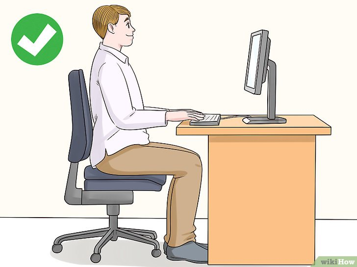
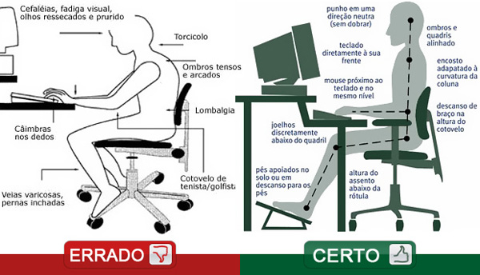

Você sabe qual é a postura ideal para ficar na frente do computador?
Às vezes não nos damos conta de que passamos a maior parte do dia trabalhando mal posicionados, e completamente inconscientes da nossa postura. Com isso, Muitas vezes as dores e o cansaço que sentimos ao chegar em casa depois do trabalho, nada mais é do que má postura. Nós fazemos uma porção de esforços desnecessários, deixando os braços na altura errada, sobrecarregando as costas e etc. As dores no pescoço, nas costas, joelhos e coxas são comuns em pessoas que trabalham mais de 6 horas por dias sentados, durante cinco dias da semana ou que passam muitas horas do dia em frente ao computador por lazer.Isso acontece porque ficar muitas horas sentado na cadeira em frente ao computador reduz a curvatura natural da coluna, gerando dor na região lombar, no pescoço e nos ombros, e ainda diminui a circulação sanguínea nas pernas e pés. Assim, para evitar estas dores é recomendado não ficar mais de duas horas seguidas sentado, mas também é importante sentar-se na posição correta, onde há uma melhor distribuição do peso do corpo sobre a cadeira e a mesa.
Algumas dicas para ajudar a manter uma postura correta:
- Os braços deverão estar apoiados em cima dos braços da cadeira ou sobre a mesa de trabalho;
- Evitar ao máximo ter que baixar a cabeça para ler ou escrever num computador, se for preciso suba a tela do computador colocando um livro por baixo. A posição ideal é que parte superior do monitor deve estar ao nível dos olhos, para que não seja preciso inclinar a cabeça, nem para cima, nem para baixo;
- A tela do computador deve estar à distância de 50 à 60 cm, normalmente o ideal é ao esticar o braço conseguir tocar na tela, mantendo o braço esticado.
- Trabalhe em ritmo razoável, fazendo pausas ao longo do dia, a cada 40 minutos, pelo menos, utilizando esse tempo para levantar-se, ir ao banheiro, ou beber água.
- Procure fazer duas vezes ao dia, pelo menos, pausas para alongamentos e outras atividades alternativas.
- Para se alongar, comece esticando o braço e puxe a ponta dos dedos para cima durante 10 a 15 segundos, repetindo de três a quatro vezes. Também é possível puxar a ponta dos dedos para baixo, também segurando durante 10 a 15 segundos.
- Para a coluna, encoste o queixo no osso da clavícula e faça uma leve pressão na nuca durante 10 a 15 segundos. Troque o lado e repita o exercício. Não é necessário fazer força, apenas o suficiente para sentir o relaxamento.